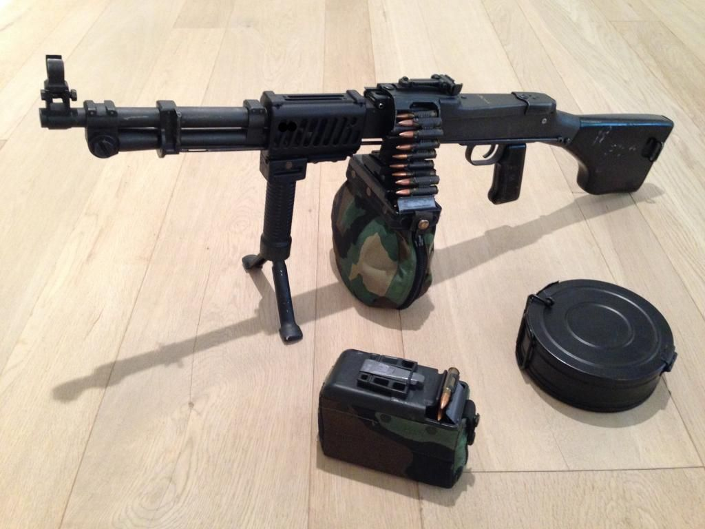

Information regardingMSG | RAMEN¿
-Museigen Administration
it has come to the council's conclusion that thy shall follow the following:
1. MSG | RAMEN¿
must avoid rushing directly on enemy lines, no matter the urges.
2. MSG | RAMEN¿
must avoid trashtalking through the microphone at all cost, several museigen members tried to stop him with 0 success.
3. MSG | RAMEN¿
isn't allowed to interact to any females romantically [unless she's cute tho] no. no exceptions ramen.
4. MSG | RAMEN¿
must not in all cost commit friendly fire no matter how bored you are at your station.
5. MSG | RAMEN¿
must remain in his cell if not on service.
6. MSG | RAMEN¿
PLEASE AVOID ATTACKING YOUR FELLOW PERSONELL PLEASE lmao, no.
(for personell other than MSG | RAMEN¿)
if MSG | RAMEN¿
is ever to escape containment please use this song and ramen to lure him back in. YOU THOUGHT ILL FALL FOR IT, BUT IT IS I. DIO!
basic info: MSG | RAMEN¿ is a machine gun expertise on the museigen field, mainly he uses a Russian RPD light machinegun as his disposal of enemy combatant. 
(picture of MSG | RAMEN¿'s Machine Gun)
if used the right way it could come to devastating effects. yes. brrrt brrrrrrrt please position him on highly strategic
posts as he could rack up an enemy wipe if did positioned the right way. the reason for his containment is his high ignorance and
lack in allied consent. he would shoot even allied troopers just because of his boredom.
Special Containment Procedures: he must be kept in a 16 meter by 16 meter cell that looks like a regular room. yet the walls is made of reinforced metal and his machinegun is to be kept on a reinforced glass box where he could casually collect it during any form of conflict. authorizing lethal force is frowned upon to RAMEN as he is usually casual when escaping containment, please follow the procedure above if you wish to contain him.
Arsenal Information: his arsenal contains of a russian RPD light machine gun, loaded with a 200-round extended magazine
while having 4 more as an extra. his muzzle contains a supressor to hide his position during combat. he melee consists of a baseball bat and
his tactical equipment contains a molotov cocktail and a trophy system.
end